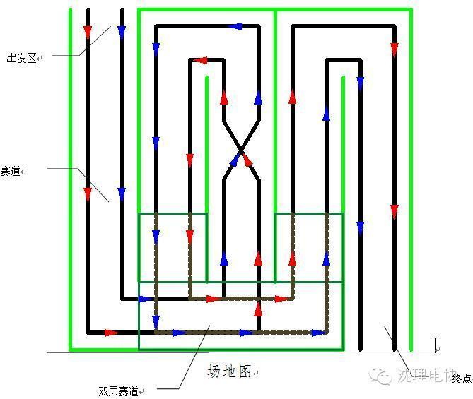
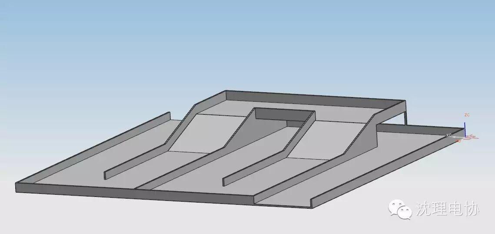
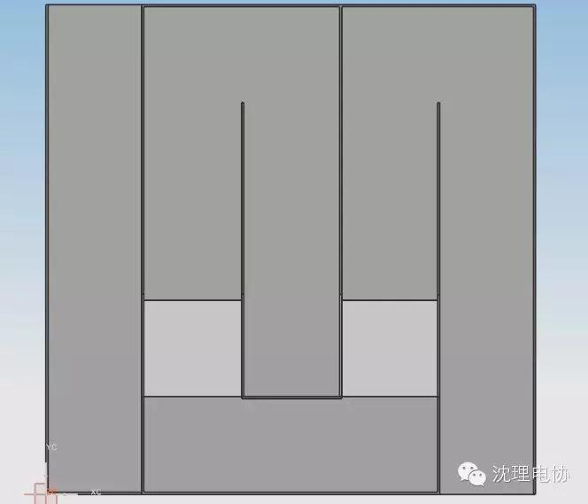

使用小程序
2015年首届“电协杯”校园机器人大赛实施方案
一、竞赛规程
（一）竞赛名称
2015年首届“电协杯”校园机器人竞赛
（二）竞赛目的与意义
本届机器人大赛是我校的第一届机器人大赛，旨在提高我校学生的动手能力，编程能力以及思维能力，对于我校来说本次机器人大赛是具有划时代意义的，是本校的第一届机器人大赛，也将成为我校的传统比赛。
（三）参赛对象与要求
1、沈阳理工大学在校本科大学生（研究生及以上学历不允许以任何方式参与机器人制作活动）；
2、每支参赛队参赛队员最多6人，且每名队员只允许报名一支参赛队。
3、各参赛队之间机器人不得雷同。
不雷同指机器人的机械结构、样式、电路等至少有一处明显不同。比赛过程中若有参赛队对其他队伍的机器人提出雷同的异议，则由竞赛委员会进行判定。如若被判定为雷同则取消全部涉及雷同队伍的比赛资格。
（四）竞赛内容与方式
比赛分为两个阶段，第一阶段为小组赛，小组赛为单循环赛，第二阶段为淘汰赛。
（五）竞赛时间及报名方式
竞赛时间12月12日-12月13日。
1.报名以电子技术与应用协会的纸质报名表和电子表为准（一试两份，赛前报到时上交）。报名时间截止到2015年11月22日20:00，必确认真填写报名表。
2.报名方式：各参赛队将报名表以电子邮件形式发送至竞赛报名邮箱（1432214155@qq.com），报名表纸质版须一式两份，均手写，一份报名时交到竞赛组委会，另一份竞赛前交到竞赛组委会。
二、竞赛组织
（一）组织机构
大赛组织委员会
（二）组织形式
由竞赛主办及承办单位共同组织成立竞赛组织委员会，由竞赛承办单位负责竞赛的组织实施。竞赛专家委员会负责赛事的规则的制定和竞赛争议的裁决。大赛建立技术交流QQ群：511127016，交流群提供竞赛相关的新闻公告、通知发布和讨论、交流。
三、竞赛规则
（一）竞赛规则
1.比赛时间为3分钟；
2.每支参赛队有1机器人；
3.裁判吹哨示意开始比赛后，机器人在30秒内启动并离开出发区；
4.机器人必须从出发区出发到达终点;
5.机器人离开出发区后只有一次重启机会，再申请需要扣分；
6.若有一支以上的队伍完成比赛，则用时短者获胜，若两队都未完成比赛，则扣分少者获胜。
注：详细规则请参照《参赛手册》
（二）比赛场地和道具
1.比赛场地尺寸3500mm×3500mm，由表面涂油漆的胶合板制成，四周有围栏 ( 高100mm、厚20mm）。
2.场地的布局详见图纸。
⑴黑色导引线为宽度30mm的背胶纸。
⑵出发区
出发区尺寸为700mm×1400mm；
⑶赛道 白色

场地图
（三）机器人
每支参赛队必须自己设计和制作机器人参与比赛。每场比赛中，每支参赛队只允许有一台机器人。由于赛制设计，竞赛可以选择手动操作和自动操作两种。
机器人
⑴整个比赛过程中，机器人的尺寸不得超过400mm长×300mm宽×200mm高。
⑵机器人在比赛中不允许分离。
⑶每支参赛队只允许有1名队员操作机器人。
(4)自动机器人启动后，参赛队员不得接触机器人。
(3)出发前，机器人任何部分不能伸出出发区。
⒊重新启动
重启按下列规定执行，一旦重启，重启的队得分清零。
(1)机器人可以随时申请重启。经裁判允许后，参赛队员要将手动机器人搬回出发区重新启动；
4.能源
⑴机器人的电源不得超过DC12v；
⑵如果用压缩空气，气压不得超过0.8MPa；
⑶不得使用竞赛委员会认为危险或不适当的能源；
5.重量
机器人，包括电源、电缆、控制盒和机器人的其它零件在赛前必须称重。每支参赛队所有机器人的总重量不得超过3kg。
（四）比赛完成
比赛持续时间
⒈比赛开始前，收到机器人准备信号后，需要在30s时间内完成机器人的准备(若双方都完成准备并向裁判示意后，可以提前开始比赛)。
2.比赛采取一场定胜负的方式，每场比赛持续3分钟。
（五）评审方式与评分标准
⒈扣分
⑴在裁判吹哨示意比赛开始前启动机器人即为抢跑，抢跑扣10分，而且一旦出现抢跑，抢跑的队必须把机器人搬回出发去，比赛必须重新开始；
⑵机器人30秒后未完全离开出发区（全部或部分机构停留在出发区上方）扣10分；
⒉判负
⑴机器人超过60秒未完全离开出发区（全部或部分机构停留在出发上
方）；
⑵机器人离开赛道；
⒊取消比赛资格
⑴破坏场地、设备或对方机器人；
⑵比赛开始后参赛队员接触自己的机器人；
⑶参赛队机器人出现雷同（详见上文“（三）参赛对象与要求”），将
取消比赛资格且取得的成绩作废；
机器人超尺寸（详见上文“（三）机器人”中“机器人”；
⑷使用危险能源（详见上文“（三）机器人”中“4.能源”）；
⑸机器人超重（详见上文“（三）机器人”中“5.重量”）；
⑹机器人的轮子破坏或污染场地表面（禁止采用在轮子上涂胶粘剂、绑
砂等可能损坏场地表面油漆的方法增大摩擦力）；
⑺恶意犯规或做出任何有悖公平竞争精神的动作；
（六）确定获胜队
按以下顺序确定获胜队：
⒈用时短的队伍获胜；
⒉扣分少的队伍获胜；
⒊重量轻的机器人获胜；
⒋机器人离终点近的队伍获胜。
（七）奖项设置
比赛分为两个阶段，第一阶段为小组赛，小组赛为单循环赛，排名靠前的队伍出线（根据参赛队数量决定分几个组及每个组出线队伍的数量），出线的队伍参加下一阶段比赛；第二阶段为淘汰赛 。
学生奖项：
一等奖三名
二等奖五名
三等奖八名
优秀志愿者奖
注：若有改动以参赛手册为准
（八）申诉与仲裁
竞赛专家委员会负责受理当场比赛的申诉。过期的申诉不予受理。仲裁委员会本着“是否有利于机器人技术发展”的原则进行仲裁。
（九）竞赛结果公示
竞赛结果将在现场评审结束2日内在本科教学网网站进行公示，公示期为三天。
四、其他
（一）联系人及联系方式
电子技术与应用协会大二干事 孟凡宇
联系电话：13942645549
电子邮箱：1432214155@qq.com
（二）领队与选手须知
1.竞赛纪律
（1）参赛队的机器人注册后，不得向其他队伍借用机器人。否则一经核实，即取消两队的获奖资格和名次。
（2）下列行为将被认定为取消该场比赛资格的行为，即该队在这一场比赛的得分为零：
故意破坏对方机器人机械结构和控制电路的。
使用带有“发射”或者爆炸性质装置的，例如火焰、水、干冰、BB弹、钢珠、可能导致缠绕或短路的遥缆、爆炸性的鞭炮等装置。
使用化学品、粘接剂粘贴场地或者对方机器人。
使用可能对人类有危险装置的，例如旋转刀片、尖锐的金属针等。
机器人采用其他手段可能对观众、参赛队员或者裁判员有人身伤害的。
裁判员认为机器人故意导致或试图故意导致比赛场地、设施或道具损坏的。
裁判员开始本场比赛的信号前，提前启动机器人，裁判员给予警告，提前启动两次，取消比赛资格并判零分。参赛选手接触正在进行比赛的机器人的。
无视裁判员的指令或警告的。
比赛开始后参赛队员进入场地围栏内的比赛区的。
（3）裁判员可以根据自己的判断，禁止可能危害参赛队员或者观众安全的机器人参加比赛。
2.竞赛安全
（1）所有机器人的制作不应给队员、裁判、工作人员、观众、设备和比赛场地造成损害。
（2）为了保证安全，如果使用激光，必须低于或等于2级，使用方式不应对操作手、裁判、工作人员和观众造成伤害。
（3）在试运行时，机器人的结构必须便于裁判检查其安全性。
（4）禁止使用燃油驱动的发动机、爆炸物、高压气体、含能化学材料作为推进动力或扩展机器人的尺寸。
（三）其他未尽事宜
1.裁判有权对本规则没有规定的任何行为做出裁决, 在有争议的情况下，该裁决视为最终裁决。
2.比赛场地及道具尺寸的允许误差为±5%。
3.鼓励所有参赛队在规则允许范围内以自己的方式装饰机器人。
附1：场地图


一、指导单位
教务处、创新创业中心、校团委、信息学院、自动化学院
二、主办单位
电子技术与应用协会
三、参赛对象
沈阳理工大学全部本科在校大学生
四、大赛QQ群
机器人大赛官方qq群：511127016
五、大赛内容及相关要求
1 、参赛形式
比赛采用辽宁省机器人大赛竞赛形式，以团队参赛，采取智能车竞速的方式，用时短者获胜
2、竞赛方式及要求
每个队伍限6人，比赛时间为三分钟，用时短者获胜
3、竞赛时间
报名时间：11月16日至11月22日17:00至20:00
试场时间：12月5日8:00至12月6日20:00
竞赛时间：12月12日8:00至12月13日17:00
竞赛地点在文体中心一楼，具体时间关注qq群消息
4、报名方式及报名地点：
参赛队伍需要进行网上报名和纸质版报名，缺一不可，纸质版报名用于参赛资格审核。
网上报名：发送报名表电子版至1432214155@qq.com
纸质版报名：在附表下载电子版报名表，打印两份手写后在11月22日20:00之前交文体中心311。
六、比赛奖项设置及奖励
经初赛，决定出进入决赛的队伍若干组。根据《创新创业训练学 分考核标准一览表》，设置奖项如下（奖项不可兼得）。
一等奖：三支参赛队伍（由冠亚季军组成）
奖励大创实践选修学分3学分及学校颁发的获奖证书
二等奖：五支参赛队伍
奖励大创实践选修学分2学分及学校颁发的获奖证书
三等奖：八只参赛队伍
奖励大创实践选修学分1学分及学校颁发的获奖证书
优秀志愿者：裁判以及优秀志愿者颁发优秀志愿者证书
七、咨询电话
电话：13942645549 联系人：孟凡宇
关注沈理电协（微信：sylgdzxh）
每一次转发和分享都是对我们的肯定。